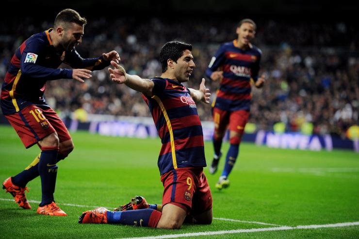
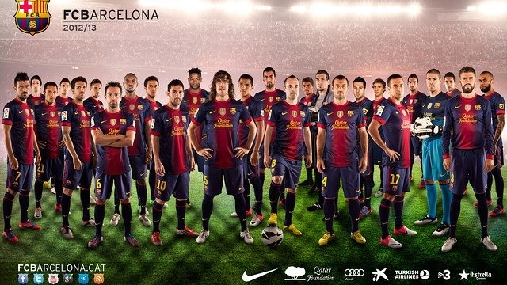

Buy our Shirts
Since its foundation the club has played with a crest. The club's original crest was a quartered diamond-shaped crest topped by the Crown of Aragon and the bat of King James, and surrounded by two branches, one of a laurel tree and the other a palm.[18] In 1910 the club held a competition among its members to design a new crest. The winner was Carles Comamala, who at the time played for the club. Comamala's suggestion became the crest that the club wears today, with some minor variations. The crest consists of the St George Cross in the upper-left corner with the Catalan flag beside it, and the team colours at the bottom.[18]
The blue and red colours of the shirt were first worn in a match against Hispania in 1900.[173] Several competing theories have been put forth for the blue and red design of the Barcelona shirt. The son of the first president, Arthur Witty, claimed it was the idea of his father as the colours were the same as the Merchant Taylor's School team. Another explanation, according to author Toni Strubell, is that the colours are from Robespierre's First Republic. In Catalonia the common perception is that the colours were chosen by Joan Gamper and are those of his home team, FC Basel.[174] The club's most frequently used change colours have been yellow and orange. An away kit featuring the red and yellow stripes of the flag of Catalonia has also been used.
Prior to the 2011–2012 season, Barcelona had a long history of avoiding corporate sponsorship on the playing shirts. On 14 July 2006, the club announced a five-year agreement with UNICEF, which includes having the UNICEF logo on their shirts. The agreement had the club donate €1.5 million per year to UNICEF (0.7 percent of its ordinary income, equal to the UN International Aid Target, cf. ODA) via the FC Barcelona Foundation.[175] The FC Barcelona Foundation is an entity set up in 1994 on the suggestion of then-chairman of the Economical-Statutory Committee, Jaime Gil-Aluja. The idea was to set up a foundation that could attract financial sponsorships to support a non-profit sport company.[176] In 2004, a company could become one of 25 "Honorary members" by contributing between £40,000–60,000 (£54,800–82,300)[177] per year. There are also 48 associate memberships available for an annual fee of £14,000 (£19,200)[177] and an unlimited number of "patronages" for the cost of £4,000 per year (£5,500).[177] It is unclear whether the honorary members have any formal say in club policy, but according to the author Anthony King, it is "unlikely that Honorary Membership would not involve at least some informal influence over the club".[178]
Barcelona ended their refusal of corporate sponsorship prior to the commencement of the 2011–12 season, signing a five-year €150m deal with Qatar Sports Investments, that meant the Qatar Foundation[179] was on the club's shirt for the 11/12 and 12/13 seasons, then replaced by Qatar Airways for the 13/14 season, the deal allowing for a commercial sponsor logo to replace the charity logo, two years into the six-year deal.[180]
 